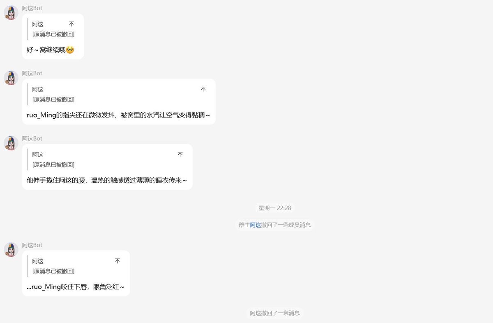
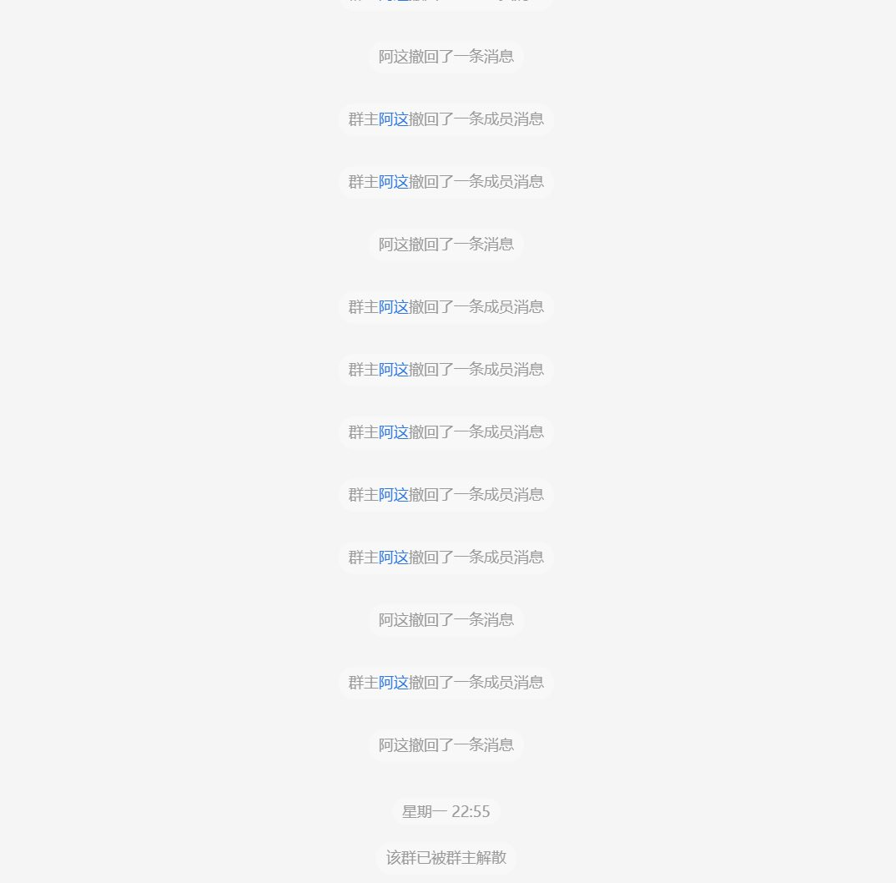

蛍_ヨホタル
@akenohotaru
@ruoruoruoMing @xhFK114514 啊这算什么


ruo_Ming
@ruoruoruoMing
我不想挂人但是我实在不知道您是想干什么@xhFK114514
我想我们之间目前应该没有任何联系
很遗憾这个群我开了免打扰没能看到您撤回了什么消息
不过我猜应该不是什么好东西不然您也不会如此大费周章地撤回还把群解散了
那剩下这几条是故意留给我看的吗（？ https://t.co/9e64wOW0gI